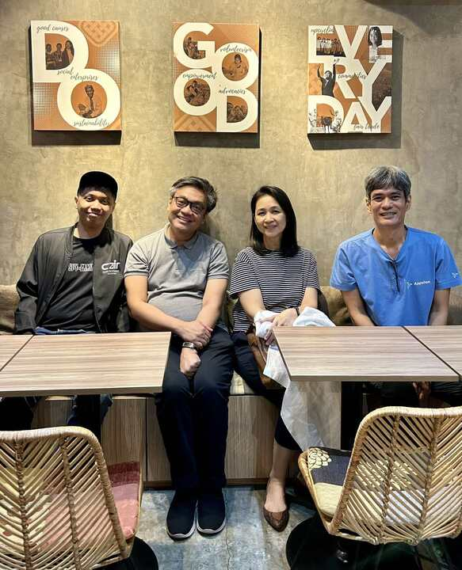
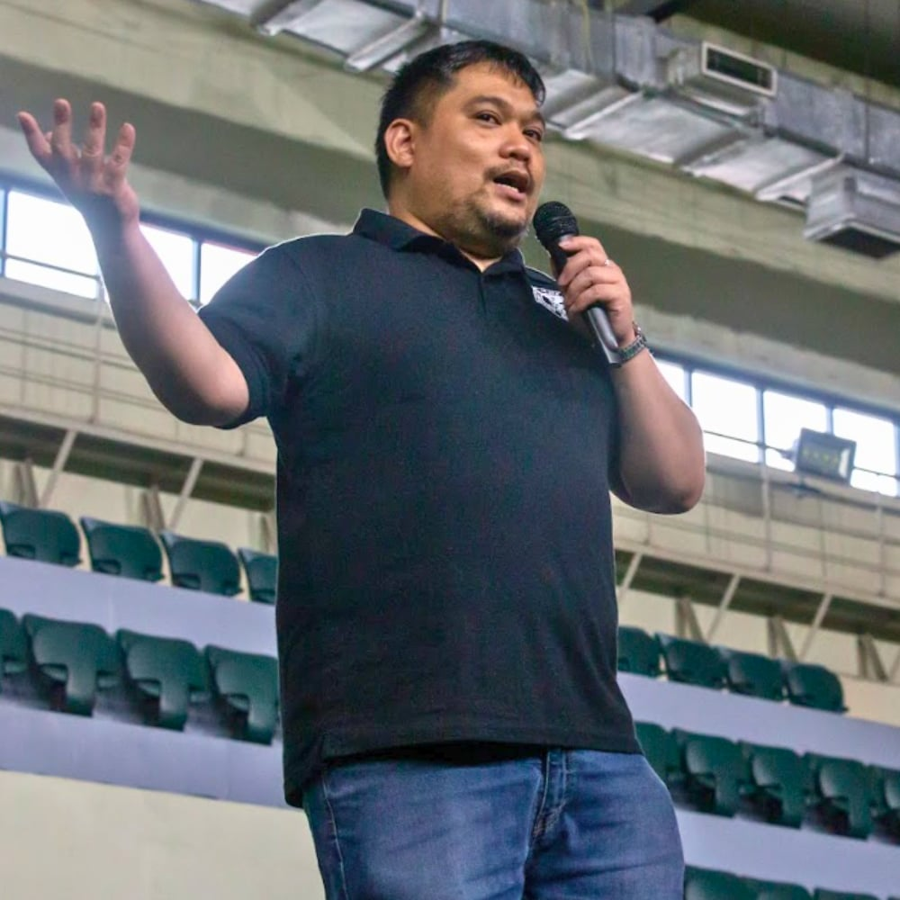

Joe Brillantes, organizer of the R User Group Philippines (RUG-PH), shares how the group has evolved with new interests emerging among its members. From a growing presence of data engineers exploring R to an increasing focus on scientific applications, the group continues to expand its reach. He discussed their upcoming plans for AI-focused meetups, the importance of ethical considerations in predictive modeling, and their efforts to support members in software engineering and analytics.

RUG-PH 11th Anniversary Celebration 14th August 2024
Since we last spoke, how has the R User Group Philippines evolved?
Overall, we’re doing well. Since we last spoke, several themes have emerged that I’d like to highlight.
First, there’s a renewed interest in R, but this time, it’s coming from data engineers and individuals interested in data more broadly. Our meetups typically see one to three first-time attendees who are members of Data Engineering Filipinas. Their interest in R often stems from a desire to explore data professions.
Another theme is that we’ve had several speakers focused on scientific applications of R. For instance, our last speaker, who presented last month, discussed mycology and how R is used to analyze the colors of fungi, which was quite fascinating. We also had an online presentation from Jayson V. Pagaduan, a director at a hospital in the U.S. He talked about how R produces efficient test results and research and which tests could be modified, eliminated, or made more efficient to ensure consistent outcomes.
Another speaker, Dr. Pauline Del Mundo, was also involved in public health research and discussed how R is applied in her work. This shift toward scientific topics is interesting because many of our previous speakers had backgrounds more aligned with the industry’s business side.
Lastly, we recorded all our meetups last year, which are now available for those who couldn’t attend due to time differences. While we haven’t made these recordings public on YouTube yet, we’ve shared them with attendees who missed the sessions. We also hosted a co-meetup with the Ghana R Users Community, where I co-hosted with Francis Mensah and Samuel Tandoh, and we spoke about the swirl package.
These themes reflect the developments we’ve observed since our last conversation.
What topics do you plan to cover in the upcoming months?
This year, we have some exciting plans for the forthcoming months, mainly focusing on artificial intelligence (AI) and large language models. We’ve received numerous questions on implementing generative AI, not limited to large language models. Therefore, we aim to hold discussions over the next three months.
We have a Dynamic Programming in R planned for April. However, we will introduce a speaker each month in May and June, covering various aspects of AI. In May, a speaker will provide insights into the current state of AI research in the Philippines. In June, another speaker will discuss what it means when people claim that large language models can reason. Lastly, we plan to host a panel discussion in July featuring speakers from previous months and additional guests.
The July meetup will culminate the discussions on ethics and governance in AI. We want to address questions about how to critically evaluate claims made by AI companies and understand their significance. This discussion will not be limited to large language models but will also encompass generative AI and analytics.
Your group has planned multiple meetups on artificial intelligence (AI) and ethics in the coming months. What inspired this focus, and what can attendees expect?
I’ve had conversations with a beginner in our group working on fraud detection. While he’s enthusiastic about transitioning into his new career, I’ve noticed some questionable methodologies in his approach. It’s crucial to emphasize that while predictive models can indicate possible fraud, it is a significant difference to outright accuse someone of committing fraud based on those predictions. We must highlight the ethical implications of building models and their potential impact on people’s lives.
In our upcoming virtual meetups, we will also explore how the Philippines can advance the AI conversation within the country. Although not directly related to R programming, this dialogue will benefit our members by helping them become more informed and discerning about AI.
After this series, we plan to return to topics related to software engineering practices, as many of our members have expressed concerns about coding practices. Though I am not a programmer, my background is more analytical, and this focus will benefit our community. We aim to present a series of talks addressing these software engineering challenges and providing valuable insights.
My goal is not just to have very clean code. I’m also interested in how different groups can collaborate to make our code easier for software engineers to deploy and more scalable.
One insight I’ve gained during these discussions is that, given R’s versatility, we could cover an entire year of software engineering topics in R. However, focusing solely on software engineering might become monotonous for others.
We usually discuss analytics for the remaining topics. Earlier this year, I gave a presentation on creating maps in R. Looking ahead, the later sessions will likely focus more on analytics topics, including predictive analytics and a talk on unsupervised learning.
Your group maintains a well-structured lineup of topics for the entire year. How do you plan and organize these meetups?
We begin each year by discussing the topics we want our speakers to cover. Once we have a list, we search for speakers relevant to those subjects. My role typically involves handling administration and finding speakers for analytics-related topics like data science. We also have a team member specialising in software engineering and another who is focusing on AI. They are responsible for contacting their networks to find suitable speakers for our user group.
We maintain a calendar with topics that we plan to discuss throughout the year. However, we aren’t as meticulously organized as some other groups might be. We may have to change the topic if we struggle to find a speaker for a meeting. We aim to have a consistent lineup of subjects for our monthly meetups, totaling 12 topics for the year.
We believe it’s essential to be reliable and consistent for our members. Even if attendance is low—say, just two or three people—we still hold the meetup as promised. This reliability fosters trust within the community.
Who are some key collaborators and supporters that help keep the R User Group Philippines running smoothly?

Left to Right, Joma Miñoza, Joe Brillantes, Michelle Alarcon, and Rad Basa
Michelle Alarcon is still with us to provide support, although she has taken a more hands-off approach since she’s now managing the AI and Analytics Association of the Philippines. She remains a valuable resource, and I can often count on her assistance when needed.
We also utilize other connections. For instance, I often contact Joma Miñoza, who works at the Center for AI Research in the Philippines, when we need expertise on AI topics. Additionally, we have Rad Basa involved in our efforts.
Rad Basa is a software engineer who works for Appsilon. When we discuss software engineering practices, I typically consult him. We are also good friends with Data Engineering Pilipinas. The founder of that group, Myk Ogbinar, is very supportive and assists me when I need help finding speakers for events.

Myk Ogbinar
These are the key people I usually bounce ideas off when planning activities and selecting speakers. I ask for their perspectives regarding the needs of the R Users Group members. We also have many dedicated R users in academia. While we invite them to participate, we usually don’t involve them in planning since we understand they are swamped. However, if we have a specific topic in mind, we can reach out, and they often suggest that one of their professors speak on the subject.
Overall, many individuals contribute to the organization of the R Users Group in the Philippines, and their support is greatly appreciated.
How do I Build an R User Group?
R Consortium’s R User Group and Small Conference Support Program (RUGS) provides grants to help R groups organize, share information, and support each other worldwide. We have given grants over the past four years, encompassing over 76,000 members in over 90 user groups in 39 countries. We would like to include you! Cash grants and meetup.com accounts are awarded based on the intended use of the funds and the amount of money available to distribute